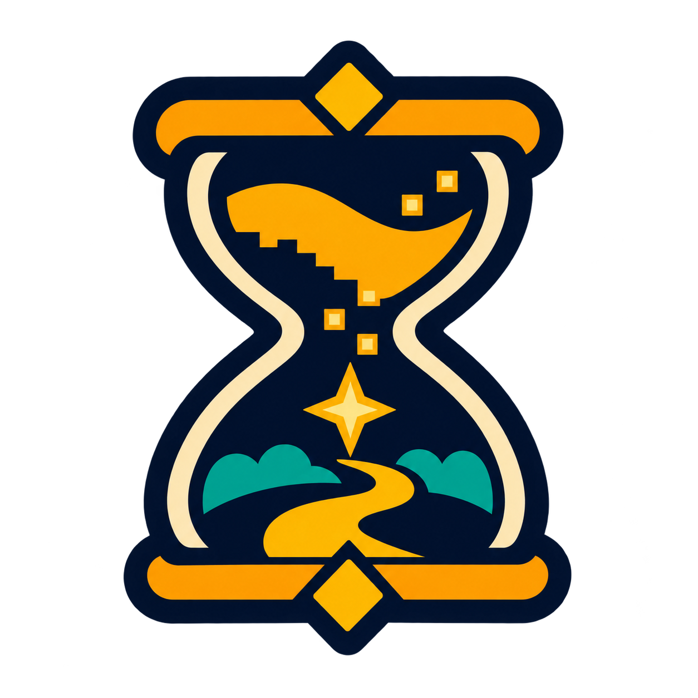

연결을 잠시 놓쳤어요.
인터넷이 연결되면 모험으로 돌아갈 수 있어요. 이 화면에서는 기록을 변경하지 않아요.
진행 중이던 집중과 완료 기록은 연결 후 앱에서 확인해 주세요. 계정·공부 자료는 이 안내 화면에 저장되지 않아요.
인터넷이 연결되면 모험으로 돌아갈 수 있어요. 이 화면에서는 기록을 변경하지 않아요.
진행 중이던 집중과 완료 기록은 연결 후 앱에서 확인해 주세요. 계정·공부 자료는 이 안내 화면에 저장되지 않아요.